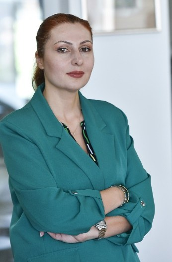
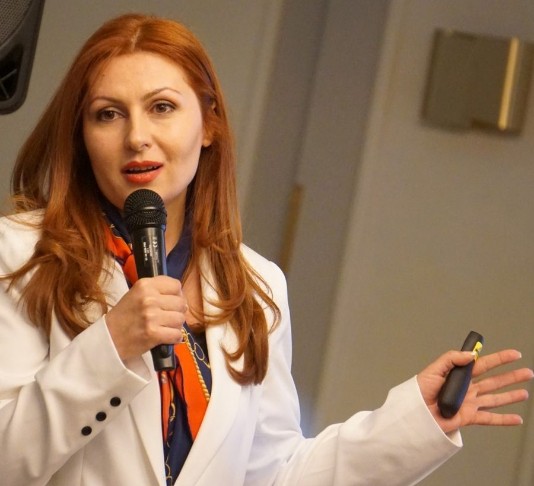

Արուսյակ Ալեքսանյան
Դոցենտ · Հետազոտական բաժնի ղեկավար · Քաղաքագետ
Երևանի պետական համալսարանի Եվրոպական ուսումնասիրությունների կենտրոն
ՀՀ գիտությունների ազգային ակադեմիայի Միջազգային գիտակրթական կենտրոն
Քաղաքագետ եմ, դոցենտ։ Իմ հետազոտական աշխատանքը կենտրոնացած է ժողովրդավարացման, քաղաքական կայունության, քաղաքականության վերլուծության, եվրոպական հարցերի, հետազոտության մեթոդաբանության, խորհրդարանական զարգացման, հասարակական կարծիքի հետազոտությունների, ինստիտուցիոնալ կարողությունների գնահատման և կոմպոզիտային ինդեքսների մշակման վրա։ Շուրջ 70 գիտական հոդվածների, գլուխների, գրքերի և հետազոտական աշխատանքների հեղինակ եմ, այդ թվում՝ Քաղաքական համակարգի կայունության ինդեքսի (SIPS), Ժողովրդավարության մակարդակի ինդեքսի (IDL), Խորհրդարանի ընկալման ինդեքսի (IPP) և, համահեղինակությամբ, COVID-19-ի պայմաններում կրթական համակարգի պատրաստվածության ինդեքսի (EPIC)։

Համառոտ
- ~70Հրապարակումներ և հետազոտական աշխատանքներ
- 6Մշակված կամ համահեղինակած կոմպոզիտային ինդեքսներ
- 15+Տարի հետազոտական և դասախոսական գործունեություն
- Horizon EuropeREDEMOS ծրագրի գործընկեր թիմի ղեկավար
Հետազոտություն և փորձագիտություն
Հետազոտության հիմնավոր մեթոդաբանության, քանակական վերլուծության և կիրառական քաղաքականության համադրություն՝ ժողովրդավարական կառավարման, խորհրդարանական զարգացման և եվրոպական հարցերի ոլորտներում։
Հիմնական մասնագիտական ոլորտներ
Հետազոտության մեթոդաբանություն և հարցումների նախագծում
Մեթոդաբանորեն հիմնավորված հետազոտությունների և հարցաշարերի մշակում։
Կոմպոզիտային ինդեքսների մշակում
Ինդեքսների, գնահատման քարտերի և գնահատման շրջանակների մշակում՝ հայեցակարգից մինչև հաշվարկ։
Խորհրդարանի կարողությունների գնահատում
Օրենսդիր մարմինների ինստիտուցիոնալ և վարչական կարողությունների գնահատում։
Հասարակական կարծիքի հարցումներ և տվյալների վերլուծություն
Հարցումների նախագծում, տվյալների հավաքագրում, վիճակագրական վերլուծություն և մեկնաբանում։
Ժողովրդավարական կառավարում և ինստիտուցիոնալ բարեփոխումներ
Կառավարման բարեփոխումների և ինստիտուցիոնալ զարգացման աջակցություն։
Եվրոպական հարցեր և Արևելյան գործընկերություն
ԵՄ-ի կողմից ժողովրդավարության աջակցության և Արևելյան հարևանության հետազոտություն։
Հետազոտական էթիկա և գիտական ղեկավարում
Էթիկական գնահատում, գիտական ղեկավարում և հետազոտողների մենթորություն։
Քաղաքական կայունություն և ժողովրդավարացում
Քաղաքական համակարգերի, կայունության և ժողովրդավարացման գործընթացների վերլուծություն։
Հետազոտական հետաքրքրություններ
- Ժողովրդավարացում և ժողովրդավարության աջակցություն
- Քաղաքական կայունություն և քաղաքական համակարգեր
- Խորհրդարանական զարգացում և ինստիտուցիոնալ կարողություններ
- Հասարակական կարծիքի հետազոտություն և հարցումների մեթոդաբանություն
- Կոմպոզիտային ինդեքսներ և գնահատման շրջանակներ
- Եվրոպական հարցեր և Արևելյան գործընկերություն
- Մարդու իրավունքներ, կառավարում և հետազոտական էթիկա
- Քաղաքականության վերլուծություն և հետազոտության մեթոդաբանություն
Կոմպոզիտային ինդեքսներ և մեթոդաբանական ներդրում
Իմ աշխատանքի առանցքային ուղղություններից է բարդ քաղաքական և ինստիտուցիոնալ երևույթների վերածումը հիմնավոր, չափելի կոմպոզիտային ինդեքսների և գնահատման շրջանակների։
- Կոմպոզիտային ինդեքս
Քաղաքական համակարգի կայունության ինդեքս (SIPS)
Հիմնական հրապարակում (2013) - Կոմպոզիտային ինդեքս
Ժողովրդավարության մակարդակի ինդեքս (IDL)
Հիմնական հրապարակում (2015) - Կոմպոզիտային ինդեքս
Խորհրդարանի ընկալման ինդեքս (IPP)
Մշակվել է ՄԱԶԾ «Ժամանակակից խորհրդարան ժամանակակից Հայաստանի համար» ծրագրի շրջանակում (2022–2023)։ - Համահեղինակ
COVID-19-ի պայմաններում կրթական համակարգի պատրաստվածության ինդեքս (EPIC)
Հիմնական հրապարակում (2023) - Համահեղինակ
Քաղաքական գործոնների ինդեքս
Հիմնական հրապարակում (2021) - Համահեղինակ
Քաղաքացիակրատիայի ինդեքս (Index of Civiliarchy)
Հիմնական հրապարակում (2024) - Մեթոդաբանություն
Խորհրդարանական ցուցանիշների զամբյուղներ և ագրեգացման մեթոդաբանություն
ՄԱԶԾ MAP ծրագիր, 2025։ - Մեթոդաբանություն
Վարչական կարողությունների գնահատման հարցում և ICI ինտեգրում
ՄԱԶԾ MAP 2.0 / FORSETI ծրագիր, 2026։
Կարիերա և կրթություն
Ներկայիս պաշտոններ
-
2012 – առ այսօր
Հետազոտական բաժնի ղեկավար, դասախոս
Եվրոպական ուսումնասիրությունների կենտրոն, Երևանի պետական համալսարան- Լայնածավալ միջգիտակարգային հետազոտական ծրագրերի ղեկավարում և իրականացում.
- Ուսումնական ծրագրերի և նյութերի մշակում, դասախոսությունների և սեմինարների անցկացում.
- Մագիստրոսական թեզերի ղեկավարում։
-
2010 – առ այսօր
Դասախոս
ՀՀ գիտությունների ազգային ակադեմիայի Միջազգային գիտակրթական կենտրոն- Քաղաքական տեխնոլոգիաների և հետազոտական մեթոդների դասավանդում, այդ թվում՝ ասպիրանտների համար.
- Ուսումնական ծրագրերի մշակում և թեզերի ղեկավարում։
-
2024 – առ այսօր
Հետազոտական էթիկայի հանձնաժողովի նախագահի տեղակալ
Երևանի պետական համալսարան- Հետազոտական հայտերի գնահատում էթիկական չափանիշներին համապատասխանության տեսանկյունից.
- Հետազոտողների խորհրդատվություն էթիկական լավագույն փորձի վերաբերյալ։
-
սեպտ. 2026 – նոյ. 2026
Գենդերային հավասարության և սոցիալական ներառման (GESI) սկզբունքներին համապատասխան ընտրական տվյալների համակարգերի և վիճակագրության ազգային խորհրդատու
ՄԱԶԾ Հայաստան — ARTEMIS ծրագիր- Կենտրոնական ընտրական հանձնաժողովի ընտրական տվյալների, տվյալների կառավարման համակարգերի և հաշվետվության պրակտիկայի գնահատում.
- Ընտրական տվյալների հավաքագրման, վերլուծության և հաշվետվության GESI-զգայուն շրջանակի մշակում.
- Ուսումնական նյութերի մշակում և ԿԸՀ աշխատակազմի գործնական ուղղորդում։
Ընտրված ծրագրեր և խորհրդատվություններ
-
փետր. 2026 – ապր. 2026
Խորհրդարանի վարչական կարողությունների գնահատման հարցման նախագծման և վերլուծության ազգային փորձագետ
ՄԱԶԾ Հայաստան — MAP 2.0 / FORSETI ծրագիր- Պատգամավորների շրջանում վարչական կարողությունների գնահատման հարցման, հարցաշարի, գնահատման մեթոդաբանության և ագրեգացման տրամաբանության մշակում, հարցման իրականացում և վերլուծական զեկույցի պատրաստում։
-
հունվ. 2023 – հունվ. 2026
REDEMOS ծրագրի (Horizon Europe) ԵՊՀ գործընկեր թիմի ղեկավար
HORIZON-CL2-2021-DEMOCRACY-01-04- WP2 աշխատանքային փաթեթի հետազոտական աշխատանքների ղեկավարում և ԵՊՀ ներդրման համակարգում ծրագրի աշխատանքային փաթեթներում։
-
հուլ. 2025 – դեկտ. 2025
Խորհրդարանական տվյալների վերլուծության և վիզուալացման տեղական խորհրդատու
ՄԱԶԾ «Ժամանակակից խորհրդարան ժամանակակից Հայաստանի համար» (MAP) ծրագիր- Խորհրդարանական ցուցանիշների զամբյուղների և միասնական մեթոդաբանության մշակում, «Խորհրդարանը թվերով» վեբէջում տվյալների ինտեգրում, Ազգային ժողովի աշխատակազմի վերապատրաստում։
-
հուլ. 2022 – հունվ. 2023
Ինդեքսի մշակման համար վիճակագրության և տվյալների համադրման ավագ ազգային փորձագետ
ՄԱԶԾ «Ժամանակակից խորհրդարան ժամանակակից Հայաստանի համար» (MAP) ծրագիր- Խորհրդարանի ընկալման ինդեքսի կառուցվածքի և մեթոդաբանության մշակում, արդյունքների հաշվարկ և զեկույցի պատրաստում։
-
օգոստ. 2020 – հուլ. 2021
Հետազոտության ղեկավար
«Enabling Learning to Happen for All Children in Emergency Crisis» ծրագիր (Global Campus of Human Rights, Right Livelihood Award Foundation)- Հետազոտական ճանապարհային քարտեզի և մեթոդաբանության մշակում, EPIC ինդեքսի մշակման համակարգում։
-
2019
Խմբագրական կոմիտեի համախմբագիր
Global Campus Human Rights Journal, հատոր 3, թիվ 1 -
փետր. 2018 – հուլ. 2018
Ակադեմիական համակարգող
Global Campus Classroom Research — «Սփյուռքի ազդեցությունը ժողովրդավարության կառուցման գործընթացների վրա»
Նախկին աշխատանքային փորձ
-
Տեղեկատվական վերլուծության և ծրագրերի մշակման բաժնի պետ
ՀՀ սպորտի և երիտասարդության հարցերի նախարարության «Երիտասարդական միջոցառումների կազմակերպման կենտրոն» ՊՈԱԿ · 2009–2011 -
Արտաքին կապերի պատասխանատու
Կիրառական հետազոտությունների և ագրոբիզնեսի հիմնադրամ (FARA) · 2005–2008
Կրթություն և գիտական կոչումներ
- 2022
Դոցենտ
Գիտական կոչում քաղաքագիտության մասնագիտությամբ։
- 2009
Քաղաքական գիտությունների թեկնածու
ՀՀ ԳԱԱ Փիլիսոփայության, սոցիոլոգիայի և իրավունքի ինստիտուտ։ Ատենախոսություն՝ Քաղաքական իրավիճակների վերլուծության տեխնոլոգիաների կիրառումը ՀՀ-ում։
- 2004 – 2009
Ասպիրանտուրա
ԵՊՀ միջազգային հարաբերությունների ֆակուլտետ, քաղաքագիտության ամբիոն։
- 2001 – 2003
Քաղաքագիտության մագիստրոս
ԵՊՀ միջազգային հարաբերությունների ֆակուլտետ — գերազանցության դիպլոմ։
- 1997 – 2001
Քաղաքագիտության բակալավր
ԵՊՀ միջազգային հարաբերությունների ֆակուլտետ — գերազանցության դիպլոմ։
Ծրագրային ապահովում
- SPSS
- R
- MS Office
Լեզուներ
- Հայերեն
- Անգլերեն
- Ռուսերեն
Դասավանդում և գիտական ղեկավարում
2012 թվականից դասավանդում եմ Երևանի պետական համալսարանում, իսկ 2010 թվականից՝ ՀՀ ԳԱԱ Միջազգային գիտակրթական կենտրոնում, այդ թվում՝ ասպիրանտների համար։
Դասընթացներ
Հետազոտության մեթոդաբանություն
Հետազոտության նախագծում, որակական և քանակական մեթոդներ, հարցումների նախագծում, տվյալների հավաքագրում և վերլուծություն։
Քաղաքական վերլուծություն և կանխատեսում
Քաղաքական իրավիճակների և գործընթացների վերլուծության մեթոդներ ու տեխնոլոգիաներ, սցենարների և կանխատեսումների մշակում։
Գիտական ղեկավարում և ուսումնական ծրագրերի մշակում
- Մագիստրոսական թեզերի ղեկավարում ԵՊՀ-ում և ՀՀ ԳԱԱ Միջազգային գիտակրթական կենտրոնում.
- Ուսումնական ծրագրերի և նյութերի մշակում.
- Դասախոսություններ և սեմինարներ մագիստրանտների և ասպիրանտների համար։
Մեթոդաբանական նյութեր (անգլերեն)

Հրապարակումներ
Շուրջ 70 գիտական հոդվածների, գլուխների, գրքերի և հետազոտական աշխատանքների հեղինակ եմ։ Ստորև ներկայացված են ընտրված աշխատանքներ՝ բնագրի լեզվով։ Ամբողջական ցանկը հասանելի է կայքի անգլերեն տարբերակում, ինչպես նաև ORCID-ում և Google Scholar-ում։
Ընտրված հրապարակումներ
-
2026Հոդված
Aleksanyan, A. [Ashot], Aleksanyan, A. [Arusyak], & Gbadebo, A. D. (2026). Strategic diversification of China’s foreign policy in Africa: The Belt and Road Initiative and the transformation of China’s public diplomacy in Nigeria. Journal of Political Science: Bulletin of Yerevan University, 5(1(13)), 95–118.
-
2026Աշխատանքային փաստաթուղթ
Chappell, L., Aleksanyan, A., Exadaktylos, T., & Richter, M. M. (2026). Stocktaking of EU democracy support towards the eastern neighbourhood. Zenodo.
https://doi.org/10.5281/zenodo.19219915 -
2025Հոդված
Aleksanyan, A., Manukyan, N., Mkrtchyan, N., Rebilas, R., & Vardanyan, N. (2025). Extracurricular activities in higher education: Challenges, economic implications, and practices in Armenia and the EU. Forum Scientiae Oeconomia, 13(2), 52–75.
https://doi.org/10.23762/FSO_VOL13_NO2_3 -
2024Կոլեկտիվ մենագրություն (խմբ.)
Aleksanyan, A. (Ed.). (2024). Resilient political systems at the crossroads of hybrid wars and peace (Armenia, Georgia, Azerbaijan, Iran, Turkey, Russia, and Ukraine). YSU Press.
https://doi.org/10.46991/YSUPH/9785808426931 -
2024Տվյալների բազա
Aleksanyan, A., Serobyan, A., Chappell, L., Exadaktylos, T., Gevorgyan, K., & Richter, M. M. (2024). EU and EU member states’ democracy support actions (2010–2022): REDEMOS dataset 2.5 [Data set]. Zenodo.
https://doi.org/10.5281/zenodo.13145726 -
2023Կոլեկտիվ մենագրություն (խմբ.)
Aleksanyan, A., & Muradyan, M. (Eds.). (2023). Education Preparedness Index in COVID-19 (EPIC): Methodology and research. YSU Press.
https://doi.org/10.46991/YSUPH/9785808425910 -
2021Մենագրություն
Aleksanyan, A., & Aleksanyan, A. (2021). Political stability challenges in the EEU countries: Political factors index. YSU Press.
https://doi.org/10.46991/YSUPH/9785808425200 -
2015Կոլեկտիվ մենագրություն (խմբ.)
Aleksanyan, A. (Ed.). (2015). Comparative analysis of the Index of Democracy Level: Armenia, Georgia, Azerbaijan, Russia, Belarus, Kazakhstan, Ukraine and Moldova. YSU Press.
PDF
Կապ
Ակադեմիական համագործակցության, հետազոտական խորհրդատվության կամ ելույթի հրավերների համար խնդրում եմ կապ հաստատել էլեկտրոնային փոստով։